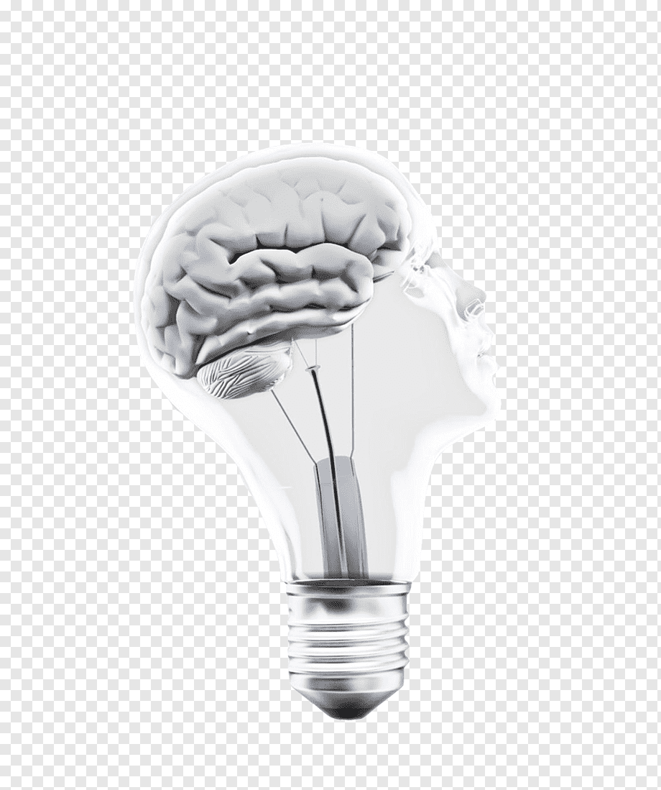

|  |
Mind PeepImprove your Concentration skills
In today's world, the biggest issue a student faces is a lack of concentration due to the large number of
distractions available at the ready to them. |
To take personality test click on TAKE TEST
| Distraction Level | Personality Type |
|---|---|
| Easily Distracted | INFP |
| Moderately Distracted | ENFJ |
| Rarely Distracted | INTJ |